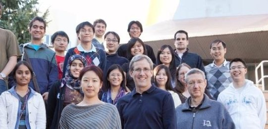

Semantic Legal Information System’s Legal Text Indexing Application
Sara S. Frug, Legal Information Institute, Cornell University
- Studied and experimented with Topic Modeling for CFR Corpus using several tools
- Handled scaling problem for CFR corpus by pre-processing like lemmatization, etc
- Used metadata from CFR and FR corpus to capture evolution of a topic over time
- Experimented with incremental modeling and phrase extraction using Mallet
- Carried out an in depth analysis in order to understand the results
Computing a statistical description of 3-D structure of nano-scale biological objects
Prof. Peter Charles Doerschuk, Cornell University
- Helped providing python conversion of MATLAB equivalent of fmincon, which solves nonlinear programming problems, fundamentally computing the location of the minimum value of a user-provided function
- Applied MATLAB version of the project to example problems to determine the input values for each of the project’s functions and the returned values.
- Wrote unit test cases in python to perform extensive testing for the python version of the project
Question Answering System
Cornell University
- Built a QA system which could answer Who, When, Where and What questions with 21% accuracy
- Experimented NLTK for tokenizing , Stanford Core NLP for POS tagging and NER and synsets from WordNet for query reformulation
- Implemented Rocchio algorithm based on relevance feedback to improve retrieval of relevant text containing answer to the concerned question
Mini Search Engine
Cornell University
- Built a search engine for more than 5000 documents and created a direct index for measuring similarity with 50+ queries.
- Experimented with various similarity measures based on the smart notation and compared their mean average precision.
- Experimented with clustering and relevance feedback techniques to study their effects on ranking of results.
Roll Of Honor Website
Cornell University
- Created a website to maintain a digital war memorial to honor Cornells war veterans for Cornells Carl A. Kroch Library.
Sound Source Localization
Prof. James R Glass, Spoken Language System Group, CSAIL, MIT
- Studied various techniques being used for 2-D acoustic localization
- Implemented GCC-PHAT method to localize sound using two microphones - MATLAB
- 
Massachusetts Institute of Technology
Prof. James R Glass, Spoken Language System Group, CSAIL, MIT
- Designed and implemented a voice interface on an existing speech recognition system, which provides users a live voice tour of MIT
- Designed and implemented another voice interface on an existing speech recognition system, which provides users with an interactive personal medical assistant